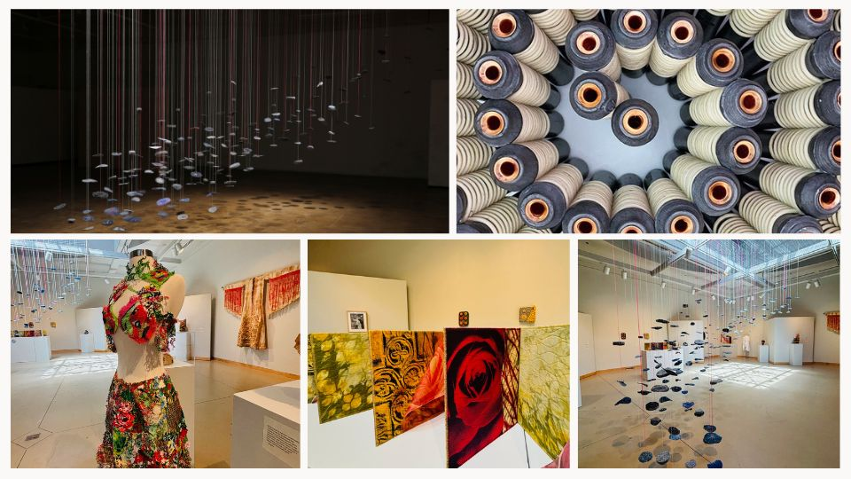
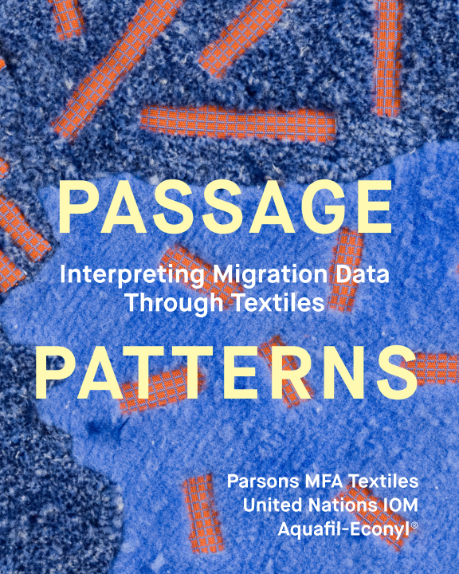
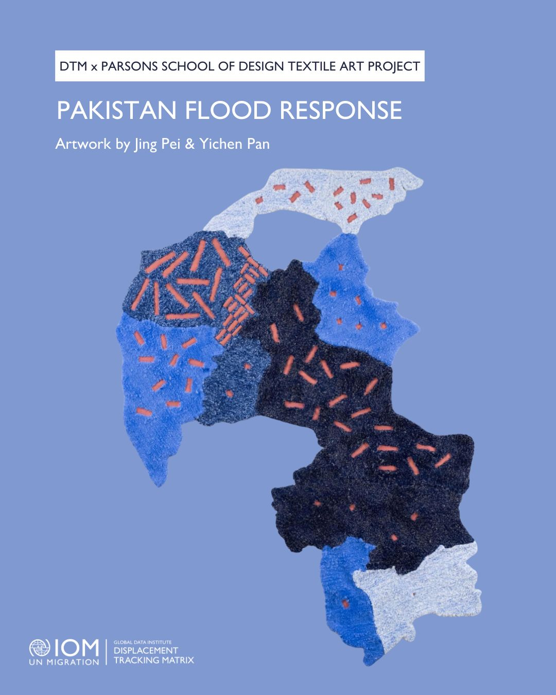
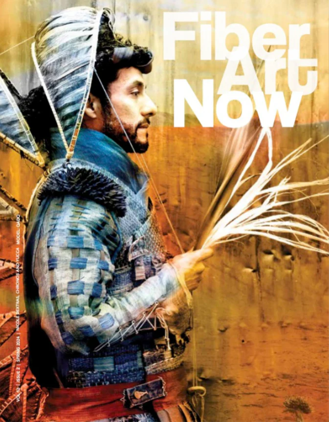

Fiber in 3D
Dates: July 20 to Nov. 30, 2024
Location: William D. Cannon Art Gallery, Carlsbad, California

Publications
Discover publications that feature Jing's artwork.
Passage Patterns: Interpreting Migration Data Through Textiles
Issue: April 2025
Collaborative effort by Jing Pei and Yichen Pan.


Fiber Art Now
Issue: Spring 2024
